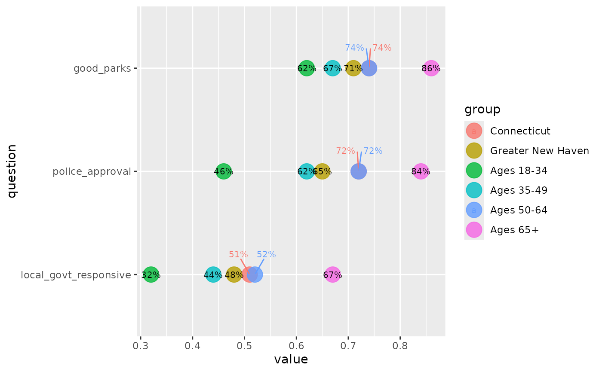

This function is designed for plots, particularly dot plots, where some values are very close together and need to be pushed apart in order to avoid overlaps. It returns just the columns needed to know which points should be dodged apart.
It doesn't calculate new positions for those points—
that depends on your specific use, but ggrepel::geom_text_repel is likely
what you'll use with this. You'll probably call this to get a data frame
of the points that should be dodged, then use dplyr::semi_join on the
original data to plot the points that do need to be dodged, and
dplyr::anti_join for the ones that don't need to be dodged (see example).
Arguments
- data
A data frame
- x
Bare name of the column being plotted on the independent axis
- value
Bare name of the dependent variable
- group
Bare column name of the grouping variable, likely used for point color
- thresh
Numeric: the threshold value of the difference between points. Any pair of points with a difference of less than
threshwill be considered too close, and will be included in the output as points to dodge.- digits
Number of digits to round to before calculating differences between points. Default: 2
- verbose
Boolean: if
TRUE, will report the number of observations being dodged. DefaultsFALSE.
Examples
if (requireNamespace("ggrepel", quietly = TRUE)) {
library(ggplot2)
cws24 <- cws_trend |>
dplyr::filter(year == 2024)
# some labels are overlapped & hard to read
ggplot(cws24, aes(x = value, y = question)) +
geom_point(aes(color = group), size = 6, alpha = 0.8) +
geom_text(aes(label = percent100(value)), size = 3)
to_dodge <- dodge_lbls(cws24,
x = question, value = value, group = group,
thresh = 0.01
)
# the first text geom will be observations that don't need to be dodged (anti-join)
# the second will be ones that do need to be dodged (semi-join)
ggplot(cws24, aes(x = value, y = question)) +
geom_point(aes(color = group), size = 6, alpha = 0.8) +
geom_text(aes(label = percent100(value)),
size = 2.7,
data = ~ dplyr::anti_join(., to_dodge, by = c("question", "group"))
) +
ggrepel::geom_text_repel(aes(label = percent100(value), color = group),
size = 2.7, seed = 1,
data = ~ dplyr::semi_join(., to_dodge, by = c("question", "group")),
direction = "x", nudge_y = 0.2
)
}
